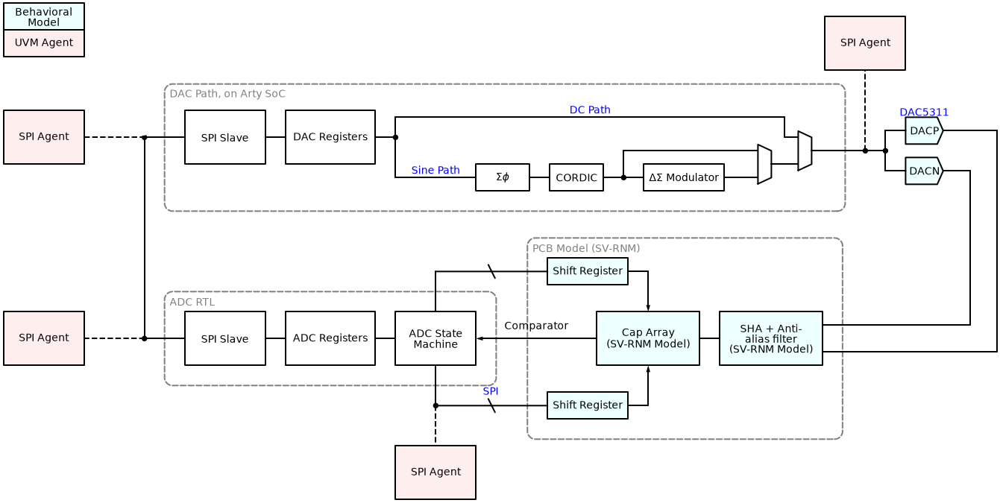
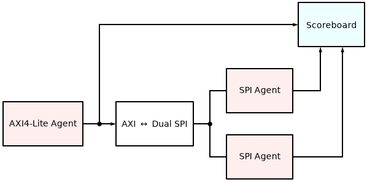

Verification
This device must, of course, be verified. One of the main goals of this project is to gain experience with UVM, and so there will be two separate testbenches, depending on whether I can get the PetaLinux build running on my SoC to the point where Jupyter can be run from it.
Architecture
Verification for this device will be done with UVM, using a combination of AXI and SPI. The goal is to drive stimulus using an AXI agent to gain confidence that the RTL will work, and repurpose a SPI agent to check the buses for shift registers and DACs.
ADC Testbench
The ADC testbench is meant as a learning opportunity for UVM and also for a thorough testbench for the ADC RTL. Unlike a real tapeout, we can recompile, but I’d rather not.

AXI Integration Testbench
If possible, I will integrate this with the Zynq PS such that this can be run similar to PYNQ. In that case, an AXI to SPI adapter will be necessary, and will be run like so:
The first thing to do will be to add an AXI adapter so that it can be used to communicate with both the DAC and the ADC.

Test List and Status
Here is the latest live status from the regression pipeline.
Test |
Functional Coverage |
Status |
Description |
|---|---|---|---|
|
0.0% |
0.0% |
With both DACs running, reset DUT and check that both DACs are disabled on startup. |
|
0.0% |
0.0% |
With both DACs in DC mode, randomize DACs and check that output codes are correct. |
|
0.0% |
0.0% |
With one or both DACs in AC mode, randomize frequency and DSM enable. |
|
0.0% |
0.0% |
Enable both DACs in DC or AC mode, then disable one or both. Ensure only one output packet received. |
|
0.0% |
0.0% |
With at least one DAC in delta-sigma mode, check output to make sure delta-sigma modulator is running. |
|
0.0% |
0.0% |
Check that ADC registers match reset values on boot. |
|
0.0% |
0.0% |
Check that for some number of FFT, OSR, and incremental enable, the correct number of ADC outputs is returned. |